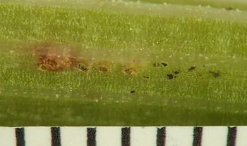
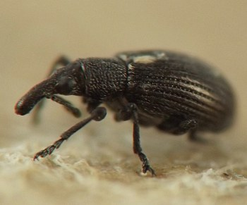

Midrib and petiole tunnelers in great water dock (Rumex britannica)
I have observed weevil and moth larvae feeding in midribs and petioles of Rumex britannica basal leaves, and I reared Perapion punctinasum (Brentidae: Apioninae) from the affected midribs. Since these insects co-occurred in the plant material, both producing tunnels in the same midrib and petiole tissue, I am including them on a single page for the sake of easier comparison.
Several different weevils are known from the Polygonaceae in North America, including native species along with at least five introduced species spread across the Apioninae and the genera Hypera and Rhinoncus (Kissinger 1968; Whitehead 1980). I am not completely sure that all the weevil larvae and associated traces included in the P. punctinasum section below belong to that species, but the circumstantial evidence linking them to the reared adults seems reasonably strong, and I saw no clear evidence suggesting that any other species of weevil was present in the plant material I examined.
I have also photographed a beetle larva, tentatively identified as Mantura floridana based on the account on p. 1548 of Eiseman (2022), mining in the midrib and leaf blade of a different Rumex species at a different location, but I did not find any such larvae in the R. britannica material that housed the weevil and moth larvae shown on this page.


The initial observations I am assigning to this species occurred in March 2022, when I found exit holes in midribs or petioles of senesced basal leaves of Rumex britannica. One of these holes proved to be the terminus of a short tunnel that connected to a small chamber inside the midrib/petiole, which contained a few coarse grains of frass (images 4-01 and 4-02). Later, on 7 May at the same site, I noted "a number of tiny, very dark gray or black [adult] weevils" perched on the newly sprouted, living R. britannica basal leaves. "The basal leaves were pretty fresh and reddish-green and mostly not fully unfurled yet" (quotes from my journal).
I examined a few of these living basal leaves more closely a few weeks later in late May. Their midribs and petioles contained several short rows of tiny, neatly round holes in the epidermis, the rows often accented by bright red discoloration of the plant tissue. Black flecks of frass decorated the epidermis surrounding the holes. Within or just underneath the holes, intact yellow eggs or spent black eggshells could be found, some of them topped by a small collection of additional frass (presumably placed there by the mother weevil) (images 1-01 through 1-08). The eggs were similar in color and shape to apionine weevil eggs depicted in Gourlay (1989).
In one such affected area, I found a very tiny weevil larva, apparently just recently hatched, flanked by two spent eggshells (one of these eggshells is shown in image 1-07). A shallow subepidermal mine led away from another such row of holes, and inside the mine was a very young weevil larva accompanied by scattered grains of bright green frass (image 1-09). Dissecting the midrib and petiole tissue further, I found two or three short linear tunnels each containing a young weevil larva, similar in appearance to the others, along with more grains of green frass (images 1-10 through 1-12). I also found a few young Lepidoptera larvae in blotchy cavities they had excavated in the midrib and petiole tissue (see "Lepidoptera" section, below), but these did not show a clear connection to any of the rows of epidermal holes.


On 16 June, I scrutinized the midribs and petioles of another batch of living R. britannica basal leaves from the same site. In these I found more examples of the shallow mines and epidermal holes. I wrote: "[The mines] tended to be only a few centimeters long and dead end in an elliptical area with some blackish material in it; I dissected at least two such endpoints...and found absolutely no disturbance to the [deeper layers of midrib/petiole tissue further underneath] them, indicating these were [apparently not] places where the larva suddenly turned into a borer. Some of these mines originate in what I’m fairly certain are the weevil egg laying areas." The mines I dissected were empty, and my photos show slits or irregular tears in the epidermis covering at least two of the elliptical endpoints, suggesting the responsible insects had evacuated the mines at these endpoints.
Also on 16 June, one of the basal leaf midribs I dissected contained a relatively mature weevil larva in an irregular cavity, accompanied by brownish grains of frass and two immature parasitoid wasps. One of the wasps was a pupa resting near the weevil larva, while the other was a very tiny ectoparasitoid larva attached to the weevil larva's integument near its head (images 3-01 through 3-04). The weevil larva later crawled out of the dissected midrib piece and came to rest on the wall of the rearing container, where it was consumed by the ectoparasitoid larva. Two adult wasps emerged in the rearing container in the ensuing weeks, and the larger and later-emerging of these, which was apparently the ectoparasitoid, is shown in image 3-08.
In late June and early July, several similar-looking, diminutive adult apionine weevils matching the description of P. punctinasum in Bright (1993) emerged from the midribs and petioles collected on 16 June. One of these (image 3-05) was identified to species on BugGuide.net (Belov 2026). This individual "emerged from a ~45mm piece of midrib I isolated in a rearing container...There was a small, weevil-sized chamber in the midrib interior with a short necklike tunnel leading to the exit hole, but I didn’t see any frass accumulation or obvious internal tunneling leading to the chamber. The chamber and short tunnel to exit hole were identical to what I found in the winter collection of overwintered [senesced] midribs/petioles" (quote from journal). The exit hole and inner midrib/petiole chamber of one of the emerged adults are shown in a photo (image 3-06) and a sketch (image 3-07) below.
Eggs, young larvae, and initial tunneling in late May


Older, apparently spent mines in mid-June


Mature larva and reared adults, late June through early July


Exit hole and tunnel in senesced leaf in winter


I found young larvae of this miner/borer tunneling in the interiors of basal leaf midribs of R. britannica in late May. They were pale greenish-white in color, with black head capsules and brown, narrow prothoracic shields (images 5-01 through 5-06).
By mid-June, their feeding had progressed to include short blotchy excursions into portions of the leaf blades adjacent to the midribs (images 6-01 through 6-08). On or about 23 June, I wrote in my journal: "Dock 1: 2 areas of significant frass expulsion along midrib, including one of about 25 square mm; white cocoon spun between leaf and bag. Dock 4: 5 areas of mining + minor frass accumulation, but the frass accumulation is only a fraction of what happened in Dock 1; attached to fibers on [cut end of] petiole, one fuzzy thing that could be a cut-out case from the leaf blade mine as with [M.] Palmer’s find on Erigonium [sic]." In this entry, "Dock 1" and "Dock 4" refer to two separate rearing bags housing basal leaves inhabited by the caterpillars, and "[M.] Palmer’s find on Erigonium [sic]" refers to the moth observed by M. Palmer in Oklahoma and listed in couplet 3b on page 1775 of Eiseman (2025), which mines in Eriogonum midribs and leaf blades and eventually builds a "portable case from an elongate piece excised from the mine" (ibid.). I did not make any further documentation about the possible case attached to the petiole in my rearing container.
Referring again to my journal entry, the "white cocoon spun between leaf and bag" eventually gave rise to a parasitoid wasp. It may have been the work of a parasitized caterpillar.
Unfortunately, I was not able to rear any adults of this moth.
Young larvae in midrib tunnels in late May


Leaf blade mines radiating from midribs in mid-June


B. Lynch (pers. comm.) and the information in Nekola (1994) assisted with plant identification.
- Belov, V. 2026. Comment on contributor post at BugGuide.net. Retrieved October 21, 2026 from https://www.bugguide.net/node/view/2571450.[return to in-text citation]
- Bright, D.E. 1993. The insects and arachnids of Canada, part 21. The weevils of Canada and Alaska. Volume 1, Coleoptera: Curculionoidea, excluding Scolytidae and Curculionidae. Publication 1882. Research Branch, Agriculture Canada: Ottawa.[return to in-text citation]
- Eiseman, C.S. 2022. Leafminers of North America, 2nd edition. Self-published e-book. Available from the author at https://charleyeiseman.com/leafminers/.[return to in-text citation]
- Eiseman, C.S. 2025. Leafminers of North America, 3rd edition. Self-published e-book. Available from the author at https://charleyeiseman.com/leafminers/.[return to in-text citation]
- Gourlay, A.H. 1989. Gorse seed weevil, Apion ulicis (Forster), life cycle. New Zealand Department of Scientific and Industrial Research (DSIR) Information Series No. 105/51. ISSN 0077-9636.[return to in-text citation]
- Kissinger, D.G. 1968. Curculionidae subfamily Apioninae of North and Central America: with reviews of the world genera of Apioninae and world subgenera of Apion Herbst (Coleoptera). Taxonomic Publications: South Lancaster, Massachusetts. 559 pp.[return to in-text citation]
- Nekola, J.C. 1994. The environment and vascular flora of northeastern Iowa fen communities. Rhodora 96(886): 121-169.[return to in-text citation]
- Whitehead, D.R. 1980. The weevil Apion (Perapion) curtirostre Germar in North America, and the systematic position of Perapion Wagner with a review of the North American species (Coleoptera: Curculionoidea: Apionidae). The Coleopterists Bulletin 34(4): 397-400.[return to in-text citation]
Page created: October 21, 2026. Last update: none